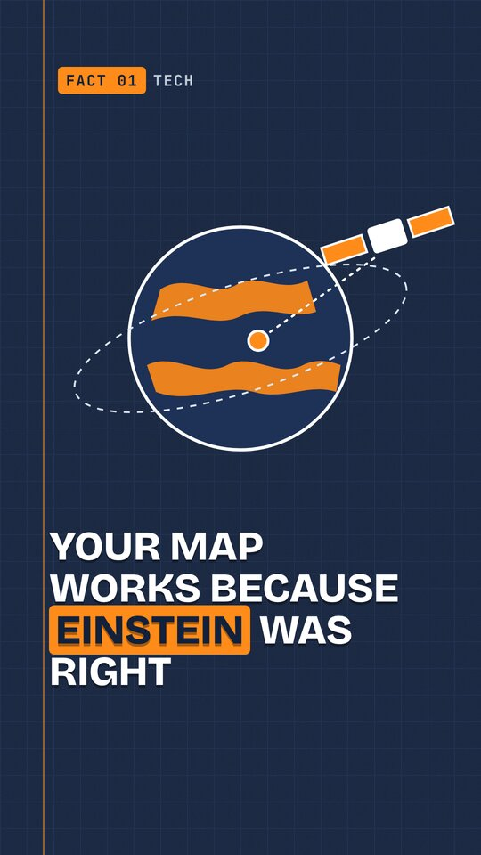
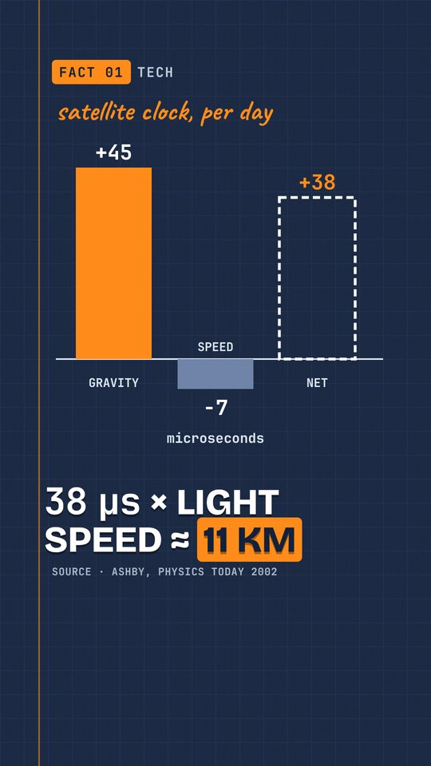
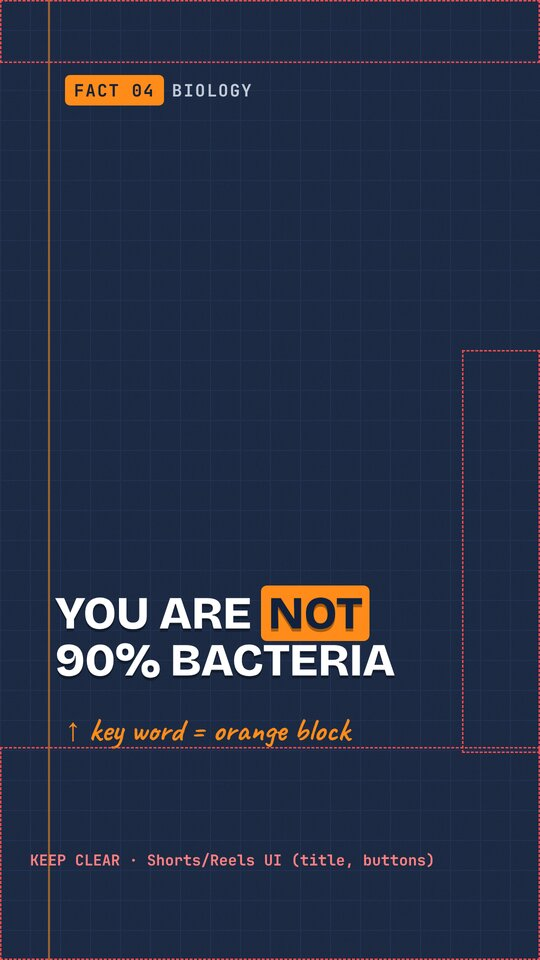
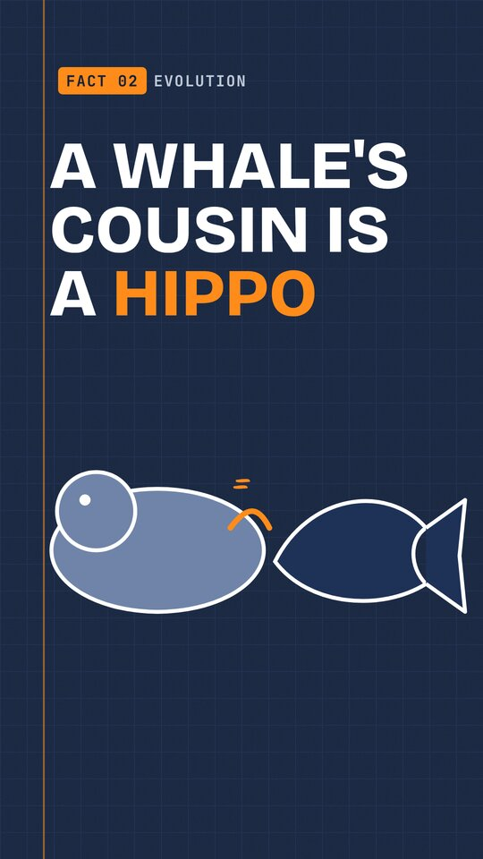
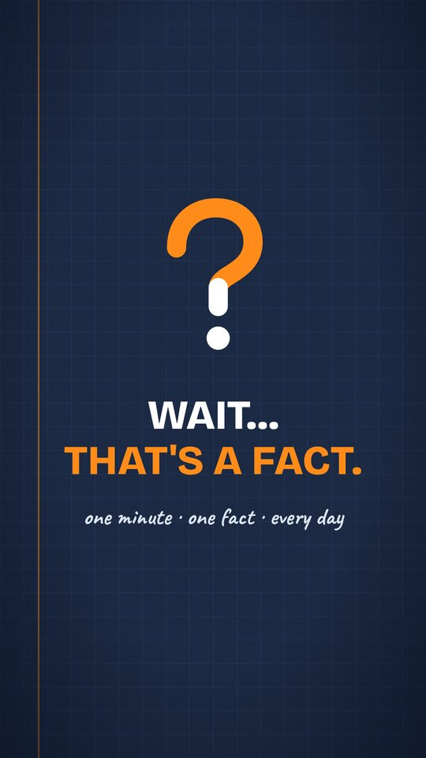
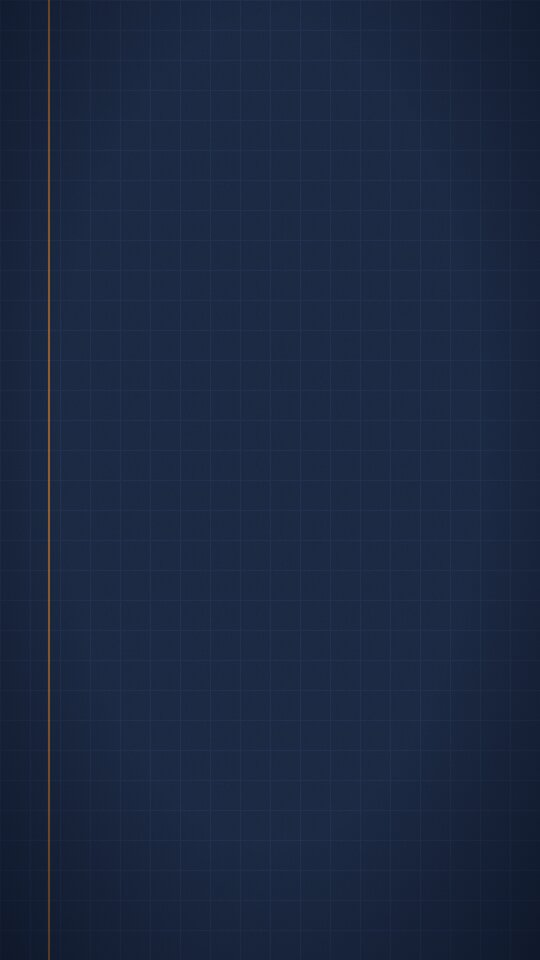

The plan for six Shorts and Reels under 60 seconds, plus four extra posts cut from the same footage at no credit cost, covering ten days. Every script is fact-checked. Each asset is designed once and reused. Every generation is priced before it runs. Nothing has been rendered yet.
Hard rule: I never pass 297 credits, which is half of your 594.6. Before every job I price it with Higgsfield's free cost check and keep a running ledger. If the retake reserve runs out, I stop and ask.
| Phase | Line item | Credits |
|---|---|---|
| P0 | Style lock: 2 test subjects × (GPT Image 2.5 high 1K ×2 @1.5 + Nano Banana Pro 2K ×2 @2.0) | 14.00 |
| P0 | Motion test: same start frame on Seedance 2.0 Mini 720p 5s @5.0 and Kling 3.0 Pro 5s silent @8.75 | 13.75 |
| P0 | Voice test: Ainsley sign-off line (ElevenLabs v4, ~0.23) ×2 | 0.50 |
| P0 | Brand music bed: ElevenLabs Music v2.5, 60 s instrumental, 2 takes @8.72 | 17.44 |
| P1 | Stills: 6 eps × 8 (incl. clip start frames), priced at the dearer model (Nano Banana Pro 2K @2.0) | 96.00 |
| P2 | Hero clips: 6 eps × 2, Seedance 2.0 Mini 720p 5s silent @5.0 | 60.00 |
| P3 | Voiceover: Ainsley, ElevenLabs v4, ~840 chars per ep ≈ 4.1 + paragraph-split overhead ≈ 5 each | 30.00 |
| Planned total | 231.69 |
These prices are Higgsfield's own quotes from today, 4 Nov 2026. If Kling 3.0 Pro wins the motion test (8.75 per clip), I make 10 clips instead of 12, which keeps the total about the same. Nothing is spent on what costs nothing: diagrams, numbers, captions, covers, logo, end cards and the four quiz or recap cuts are built locally. AI models still get numbers and text wrong, so no number ever appears in a generated image.
These are built and ready now. The illustrations in the mockups are placeholders I drew to show layout, type and colour. The final art comes from the P0 style lock.






Your phone's map only works because Einstein was right.
GPS is a timing machine. Satellites twenty thousand kilometres up broadcast the exact time, and your phone works out where you are from how long each signal took to arrive.
Up there, gravity is weaker, and relativity says clocks run faster in weaker gravity. About forty-five microseconds a day faster.
But the satellites also move at nearly four kilometres a second, and moving clocks run slow. About seven microseconds slower.
Net result: thirty-eight microseconds fast, every day. Sounds tiny. But the signals travel at the speed of light, so that drift is worth more than ten kilometres of error. Per day.
So engineers tune the clocks to tick slightly slow before launch.
Every time the blue dot finds you, relativity quietly passes another test.
Wait… that's a fact.
Sources: physicstoday.aip.org · courses.ems.psu.edu · www.gps.gov
| Time | Source | Visual (subject prompt; the style block is appended) |
|---|---|---|
| 0–3s | AI clip C1 (from S1) | Earth seen from space with one GPS satellite on a dashed orbit; thin signal arcs reach a small orange map pin on the globe. Motion: satellite glides along the dashed orbit; signal rings pulse from satellite toward the pin |
| 3–8s | AI still S2 | A hand holding a smartphone showing a simple abstract map with one glowing orange location dot. |
| 8–13s | AI still S3 | Four satellites spaced around Earth, dashed lines converging on one point on the surface. |
| 13–20s | AI clip C2 (from S4) | A round clock floating above Earth; beneath Earth a curved spacetime grid dips like a stretched sheet. Motion: the curved grid gently ripples outward and the clock hands sweep slightly faster |
| 20–26s | AI still S5 | A GPS satellite streaking past with speed lines behind it, a small clock on its body. |
| 26–33s | LOCAL diagram D1 | Bar chart: +45 (gravity), −7 (speed), +38 net, in microseconds per day. |
| 33–40s | LOCAL diagram D2 | Map with the dot drifting along a growing line: 38 µs × light speed ≈ 11 km. |
| 40–46s | AI still S6 | An engineer's hand turning a tiny dial on a satellite clock in a clean room, a rocket silhouette in the background. |
| 46–53s | AI still S7 | A person walking down a city street at dusk looking at a phone, a glowing orange dot trail behind them. |
| 53–56s | LOCAL end card | Logo flip and the sign-off. |
Shorts/Reels title: Your GPS needs Einstein to work 🛰️ #shorts · Cover line: YOUR GPS NEEDS EINSTEIN
A whale's closest living relative is a hippo.
Not a shark. Not a seal. A hippo.
Family trees aren't built on looks, though. They're built on ancestry.
The first big clue came from DNA. In 1999, Japanese scientists found "jumping genes", bits of DNA that paste copies of themselves into the genome, sitting in the exact same spots in whales and hippos, but not in cows or deer. Insertions like that almost never land in the same place twice by chance.
Then the fossils agreed. In 2001, ancient whales that still had legs turned up with a double-pulley ankle bone, the signature of even-toed hoofed mammals, the group that includes hippos.
Whales didn't evolve from hippos. They share an ancestor that lived more than fifty million years ago.
So that hippo in the river? It's a whale's cousin that kept its legs.
Wait… that's a fact.
Sources: pmc.ncbi.nlm.nih.gov · newsarchive.berkeley.edu
| Time | Source | Visual (subject prompt; the style block is appended) |
|---|---|---|
| 0–3s | AI clip C1 (from S1) | Split scene: a hippo standing in a river on the left, a whale breaching from the ocean on the right, a shoreline between them. Motion: the whale rises and splashes back; the hippo flicks its ears and blinks |
| 3–6s | AI still S2 | A shark and a seal side by side, looking puzzled. |
| 6–10s | AI still S3 | A hand-drawn tree of life branching upward, small animal silhouettes at the branch tips. |
| 10–22s | AI clip C2 (from S4) | A DNA double helix with small orange segments hovering beside it. Motion: the orange segments hop into matching slots in the helix one by one |
| 22–27s | LOCAL diagram D1 | Cladogram: whales + hippos joined, then cows/deer, then pigs and camels, with orange insertion marks on the shared branch. |
| 27–35s | AI still S5 | Fossil skeleton of a small, wolf-sized, four-legged early whale embedded in layered rock. |
| 35–40s | LOCAL diagram D2 | Simplified ankle bone with two pulley grooves highlighted in orange. |
| 40–47s | AI still S6 | A small hoofed mammal standing at a riverbank at dawn, the shared ancestor, its silhouette faint. |
| 47–54s | AI still S7 | A hippo submerged up to its eyes in a river; its reflection on the water is the silhouette of a whale. |
| 54–57s | LOCAL end card | Logo flip and the sign-off. |
Shorts/Reels title: A whale's closest living relative is a HIPPO 🦛🐋 #shorts · Cover line: A WHALE'S COUSIN IS A HIPPO
Why does a piano repeat itself every twelve keys? Why not ten?
Because twelve is where maths and your ears almost agree.
Notes sound good together when their frequencies form simple ratios. Double the frequency and you get the same note, an octave higher. Multiply by three over two and you get a fifth, the smoothest-sounding interval after the octave.
Now stack fifths. After twelve of them, you land almost exactly seven octaves up. Almost. The maths gives 129.7 instead of 128. That little gap is called the Pythagorean comma.
Over centuries, musicians settled on a compromise. Shrink every fifth by a hair, and twelve equal steps fit the octave perfectly.
And it's not universal. Indian music theory describes twenty-two shrutis, and Javanese gamelan uses scales of five or seven tones.
Twelve isn't magic. It's the best deal our ears would accept.
Wait… that's a fact.
Sources: en.wikipedia.org · en.wikipedia.org · en.wikipedia.org
| Time | Source | Visual (subject prompt; the style block is appended) |
|---|---|---|
| 0–3s | AI clip C1 (from S1) | A piano keyboard seen from above, one octave of twelve keys glowing orange. Motion: the twelve keys press down one after another in a wave, soft light pulsing |
| 3–8s | AI still S2 | A single string stretched on a wooden board (monochord), a finger plucking it, faint vibration curves. |
| 8–20s | LOCAL diagram D1 | Waveforms: ratio 2:1 (octave) and 3:2 (fifth), each with a real tone played (generated locally). |
| 20–28s | AI clip C2 (from S3) | A spiral staircase of twelve steps winding upward through seven floors, a small orange ball on the bottom step. Motion: the ball hops up the spiral steps and lands slightly past the top floor's edge |
| 28–35s | LOCAL diagram D2 | 129.7 vs 128 bars with the small gap labelled 'Pythagorean comma'. |
| 35–41s | AI still S4 | A piano tuner with a tuning lever leaning into an open upright piano, nineteenth-century clothes. |
| 41–45s | AI still S5 | A sitar and a tanpura resting on a patterned rug. |
| 45–49s | AI still S6 | A row of bronze gamelan metallophones with mallets. |
| 49–54s | AI still S7 | A cartoon ear and a piano keyboard shaking hands. |
| 54–57s | LOCAL end card | Logo flip and the sign-off. |
Shorts/Reels title: Why does music have exactly 12 notes? 🎹 #shorts · Cover line: WHY 12 NOTES?
You've heard you're more bacteria than human. Ten microbes for every one of your cells.
That number is wrong.
It came from a rough estimate back in 1972, and it got repeated for more than forty years.
In 2016, researchers in Israel and Canada finally did a careful count. About thirty-eight trillion bacteria, mostly in your colon. And about thirty trillion human cells.
That's not ten to one. It's roughly one point three to one.
And most of your own cells are red blood cells, about eighty-four percent of them.
Bacteria are tiny, so all of yours together weigh about two hundred grams. Roughly one mango.
The ratio isn't even fixed. A single trip to the toilet can flush out enough gut bacteria to tip the balance back toward you.
So by count, it's close to a tie. By weight, you're overwhelmingly you.
Wait… that's a fact.
Sources: pmc.ncbi.nlm.nih.gov · www.sciencedaily.com
| Time | Source | Visual (subject prompt; the style block is appended) |
|---|---|---|
| 0–3s | AI clip C1 (from S1) | A human silhouette outline filled with hundreds of tiny orange rod- and dot-shaped bacteria. Motion: the bacteria swirl slowly inside the silhouette like a gentle current |
| 3–8s | LOCAL diagram D0 | '10 : 1' stamped, then struck through in orange. |
| 8–13s | AI still S2 | A 1970s desk with a typewriter, a coffee mug and a sheet of abstract scribbled calculations. |
| 13–20s | AI still S3 | A scientist at a microscope, tally marks floating in the air beside them. |
| 20–27s | AI clip C2 (from S4) | A stylised winding intestine tube, friendly and non-gory, filled with tiny orange bacteria. Motion: the bacteria drift slowly along the winding tube |
| 27–33s | LOCAL diagram D1 | Bars: 38 trillion bacteria vs 30 trillion human cells, ratio ≈ 1.3 : 1. |
| 33–37s | LOCAL diagram D2 | Donut chart: red blood cells 84% of human cells. |
| 37–43s | AI still S5 | An old balance scale: a single mango on one pan, a small heap of tiny orange bacteria on the other, level. |
| 43–49s | AI still S6 | A seesaw with a cartoon human on one end and a cloud of bacteria on the other, the human's side just touching down. |
| 49–54s | AI still S7 | The same human silhouette standing confidently, glowing softly, a few bacteria orbiting around it. |
| 54–57s | LOCAL end card | Logo flip and the sign-off. |
Shorts/Reels title: You are NOT 90% bacteria 🦠 #shorts · Cover line: YOU ARE NOT 90% BACTERIA
"OK" is one of the most widely understood words on the planet. And it started as a joke.
In the late 1830s, Boston newspapers had a craze for abbreviating deliberately misspelled phrases. O.W. for "oll wright". K.G. for "know go".
On the twenty-third of March, 1839, the Boston Morning Post printed "o.k.", short for "all correct", jokingly spelled "oll korrect".
Most of these jokes died. OK got lucky.
In 1840, President Martin Van Buren ran for re-election. His nickname was "Old Kinderhook", after his hometown. Supporters formed O.K. Clubs, and suddenly two letters were everywhere.
Van Buren lost. The word won.
Nobody pieced this together until the 1960s, when linguist Allen Walker Read dug through old newspapers.
So every time you text "OK", you're finishing a joke from 1839.
Wait… that's a fact.
Sources: www.merriam-webster.com · www.jstor.org
| Time | Source | Visual (subject prompt; the style block is appended) |
|---|---|---|
| 0–3s | AI clip C1 (from S1) | A vintage hand-operated printing press with a blank newspaper sheet. Motion: the press lever pulls down and stamps the sheet; a puff of ink dust |
| 3–9s | AI still S2 | An 1830s Boston street, a newsboy in a cap holding up blank newspapers. |
| 9–15s | LOCAL diagram D1 | Handwritten cards flip: O.W. = 'oll wright', K.G. = 'know go'. |
| 15–22s | AI still S3 | Close-up of an old newspaper page with blank columns; we overlay 'o.k. — all correct' locally in period type. |
| 22–30s | AI clip C2 (from S4) | An 1840 election rally: top hats, a crowd, blank banners on poles. Motion: the crowd waves hats and the blank banners sway |
| 30–35s | AI still S5 | A nineteenth-century American statesman with large sideburns in a dark coat, a generic illustration rather than a portrait likeness. |
| 35–40s | AI still S6 | A telegraph key with copper wires stretching away across a landscape. |
| 40–47s | AI still S7 | A 1960s linguist in a library surrounded by stacks of old newspapers, holding a magnifying glass. |
| 47–52s | AI still S8 | A modern hand typing on a smartphone; we overlay a chat bubble saying 'ok' locally. |
| 52–55s | LOCAL end card | Logo flip and the sign-off. |
Shorts/Reels title: 'OK' started as a JOKE in 1839 📰 #shorts · Cover line: OK WAS A JOKE
You've probably heard plane windows are round because square ones made jets crash. That's only half right.
In 1954, two de Havilland Comets, the world's first jet airliners, broke apart in mid-air, less than three months apart.
Investigators sank an entire Comet fuselage in a giant water tank and pressurised it again and again, flight after simulated flight, until it split open.
Here's the twist. The Comet's passenger windows already had rounded corners. The inquiry traced the first break-up to a fatigue crack at the corner of a small antenna window in the roof.
Every flight, the cabin swells slightly, then relaxes. Stress flows around every hole in the skin and piles up at tight corners. Thousands of cycles later, the metal cracks.
So the real lesson wasn't just "make windows round". It was: design every opening for fatigue.
Wait… that's a fact.
Sources: www.faa.gov · www.faa.gov
| Time | Source | Visual (subject prompt; the style block is appended) |
|---|---|---|
| 0–3s | AI clip C1 (from S1) | Close-up of a modern airliner cabin window with rounded corners, clouds outside. Motion: clouds drift past outside the window; light shifts gently |
| 3–6s | LOCAL diagram D0 | A square window shape struck through, then a question mark. |
| 6–13s | AI still S2 | A 1950s de Havilland Comet jet airliner in flight, engines buried in the wing roots, sleek silver body. |
| 13–22s | AI clip C2 (from S3) | An airliner fuselage submerged in a huge indoor water tank, engineers on a gantry above. Motion: the water surface ripples rhythmically as if the fuselage is being pressurised and released |
| 22–30s | AI still S4 | Top of an aircraft fuselage with two small rectangular antenna cut-outs in the roof, an orange crack spreading from one corner. |
| 30–40s | LOCAL diagram D1 | Stress lines flowing around a sharp-cornered hole (bunched up, orange) versus a rounded hole (smooth). |
| 40–46s | AI still S5 | A fuselage section gently swelling and relaxing like a breathing balloon, with curved arrows. |
| 46–52s | AI still S6 | Engineers with a flashlight inspecting the rounded window frames of a modern airliner. |
| 52–55s | LOCAL end card | Logo flip and the sign-off. |
Shorts/Reels title: Why plane windows are round (it's not what you think) ✈️ #shorts · Cover line: ROUND WINDOWS? HALF TRUE
Post the same video to YouTube Shorts and Instagram Reels on the same day, around 7 pm IST, until your analytics suggest a better time. The four cut days reuse existing footage: a 10–15 s quiz that teases the next episode, and a recap. They cost nothing.